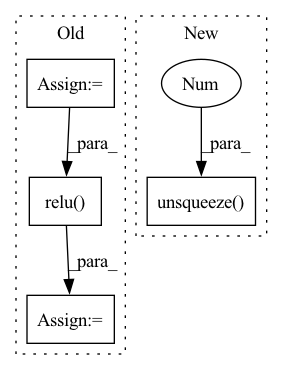

Pattern ID :5755

Before Change
// print("grads: {}".format(grads))
// print("weights: {}".format(type(weights)))
gcam = torch.mul(fmaps, weights).sum(dim=1, keepdim=True)
gcam = F.relu(gcam)
gcam = F.interpolate(
gcam, self.image_shape, mode="bilinear", align_corners=False
)
B, C, H, W = gcam.shape
gcam = gcam.view(B, -1)
gcam -= gcam.min(dim=1, keepdim=True)[0]
gcam /= gcam.max(dim=1, keepdim=True)[0]
After Change
fmaps, weights = self.select_highest_layer()
gcam = []
for i in range(self.logits.shape[0]):
gcam.append(self.generate_helper(fmaps[i].unsqueeze(0), weights[i].unsqueeze(0)))
else:
fmaps = self._find(self.fmap_pool, target_layer)
grads = self._find(self.grad_pool, target_layer)
In pattern: SUPERPATTERN
Frequency: 3
Non-data size: 4
Instances
Fragment ID: 20179185
Project Name: karol-g/gcam
Commit Name: 4d3673129f7f35d0b6ea05944a037268b4da45b2
Time: 2020-01-02
Author: KarolGotkowski@gmx.de
File Name: evaluation_models/grad_cam/grad_cam.py
M Class Name: GradCAM
N Class Name: GradCAM
M Method Name: generate(2)
N Method Name: generate(2)
M Parent Class: _BaseWrapper
N Parent Class: _BaseWrapper
M File Name: evaluation_models/grad_cam/grad_cam.py
N File Name: evaluation_models/grad_cam/grad_cam.py
M Start Line: 209
M End Line: 228
N Start Line: 231
N End Line: 244
'>
Before Change
encoder_outputs.unsqueeze(0))
output = torch.cat((embedded[0], attn_applied[0]), 1)
output = self.attn_combine(output).unsqueeze(0)
output = F.relu(output)
output, hidden = self.gru(output, hidden)
output = F.log_softmax(self.out(output[0]), dim=1)
return output, hidden, attn_weights
After Change
embedded = self.dropout(self.embedding(_input).view(1, 1, -1))
attn_weights = F.softmax(self.attn(torch.cat((embedded[0], hidden[0]), 1)), dim=1)
attn_applied = torch.bmm(attn_weights.unsqueeze(0), encoder_outputs.unsqueeze(0))
output = F.relu(self.attn_combine(torch.cat((embedded[0], attn_applied[0]), 1)).unsqueeze(0))
output, hidden = self.gru(output, hidden)
output = F.log_softmax(self.out(output[0]), dim=1)
return output, hidden, attn_weights
'>
Fragment ID: 20179195
Project Name: asahi417/lm-question-generation
Commit Name: 807e2131b9e761d29682f6ddb83c19ca665d4f44
Time: 2022-12-25
Author: asahi1992ushio@gmail.com
File Name: misc/qag_model/lstm_model/model_training.py
M Class Name: AttnDecoderRNN
N Class Name: AttnDecoderRNN
M Method Name: forward(4)
N Method Name: forward(4)
M Parent Class: nn.Module
N Parent Class: nn.Module
M File Name: misc/qag_model/lstm_model/model_training.py
N File Name: misc/qag_model/lstm_model/model_training.py
M Start Line: 85
M End Line: 96
N Start Line: 72
N End Line: 75
'>
Before Change
assert x.shape[1] == self.channels
// BxCxL
theta = torch.mean(x, axis=-1)
theta = self.fc1(theta)
theta = self.relu(theta)
theta = self.fc2(theta)
theta = 2 * self.sigmoid(theta) - 1
relu_coefs = theta.view(-1, self.channels, 2*self.k) * self.lambdas + self.init_v
// BxCxL -> LxBxCx1
After Change
elif self.conv_type == "2d":
// BxCxHxW -> HxWxBxCx1
x_perm = x.permute(2, 3, 0, 1).unsqueeze(-1)
output = x_perm * relu_coefs[:, :, :self.k] + relu_coefs[:, :, self.k:]
// HxWxBxCx2 -> BxCxHxW
result = torch.max(output, dim=-1)[0].permute(2, 3, 0, 1)
'>
Fragment ID: 20179163
Project Name: islanna/dynamicrelu
Commit Name: 1ee4394be4c9e5517d7dc2e5605416b65b321e53
Time: 2020-04-14
Author: slizhikova.a.v@gmail.com
File Name: dyrelu.py
M Class Name: DyReLUB
N Class Name: DyReLUB
M Method Name: forward(2)
N Method Name: forward(2)
M Parent Class: DyReLU
N Parent Class: nn.Module
M File Name: dyrelu.py
N File Name: dyrelu.py
M Start Line: 55
M End Line: 66
N Start Line: 62
N End Line: 80